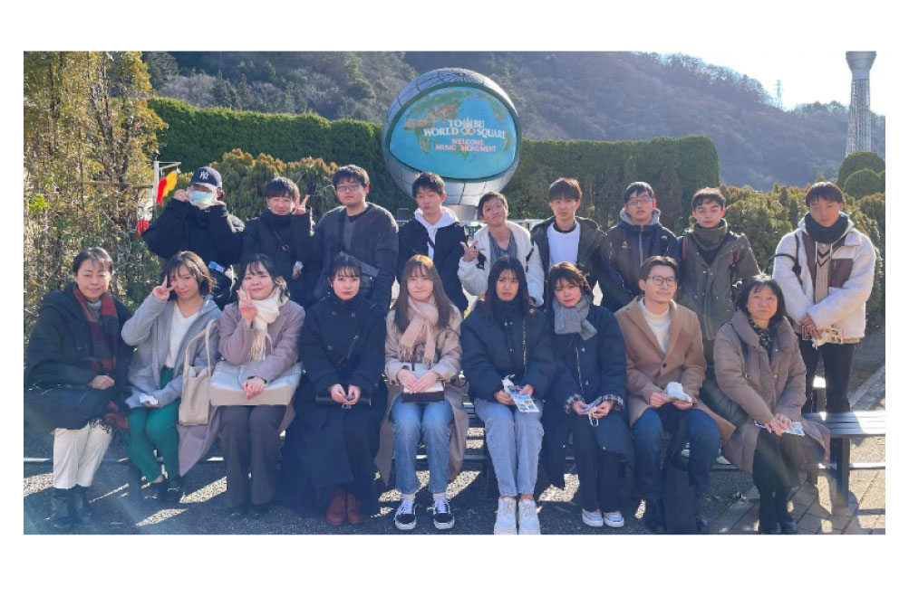
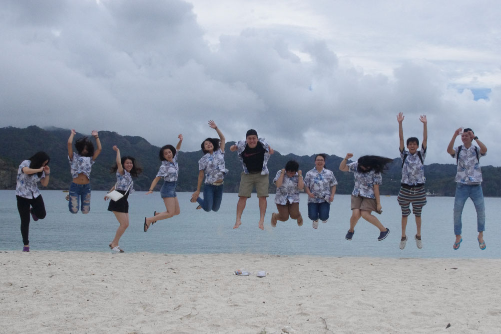
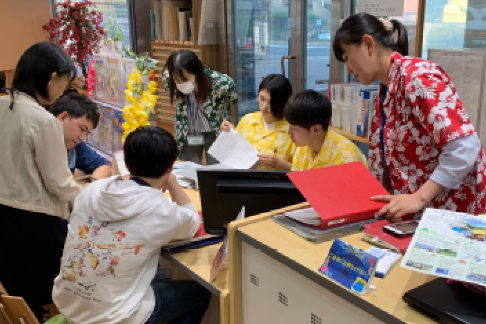

観光・ツーリズム科
- トラベルスタッフコース／ニューツーリズムコース
- ツーリズム開発・大学コース
-
時代の変化やお客様の
ニーズを的確に捉え
新しいツーリズムをプロデュースする - お客様の旅行プランを作成するのではなく、「旅行」を一つのイベントとして捉え、お客様のニーズに合わせた記憶に残るプランの作成から、賑わいを生み出すまちおこしなど、自治体との連携を通じてさまざまな「コトづくり」を提案できる人材を目指します。
学びPICK UP!
テクノス展 ２日目 AIさくらさん来校！！
テクノス展２日目 １３時からオンライン生配信で２年間の学修成果を発表いたしました！ しゃべることが苦ってだった学生、全く鉄道について詳しくなかった学生などのチームを作り挑みました。 日頃の趣味の...
続きを読む- 【目指せる職種】
- カウンターセールス／アウト・セールス／ランドオペレーター／ツアープランナー／ツアーコンダクター／現地ガイド／バスガイド 他
- 【目指せる資格】
- 国内・総合旅行業務取扱管理者（国家試験）／旅行地理検定／アマデウス・システム検定／観光英語検定／TOEIC®／実用英語技能検定／サービス介助士／秘書検定／日商 PC検定（ワープロ検定）／マナー・プロトコール検定／世界遺産検定 他
- 【主な就職先】
- 京王観光（株）／（株）日本旅行／（株）JTB／（株）阪急トラベルサポート／（株）エイチ・アイ・エス（H.I.S）／（株）はとバス／東京地下鉄（株）（東京メトロ）／近畿日本ツーリスト（株）／（株）JR東日本びゅうツーリズム＆セールス／商船三井客船（株） 他
トラベルスタッフコース
カウンターでのセールススタッフやツアーコンダクター、プランナーなど旅行業界での活躍をめざし、国内外問わず幅広い旅の知識と経験を身につけていきます。お客様のニーズを聞きだし、想像を越える旅の感動を届けられる力を育てていきます。
ニューツーリズムコース
「観る」だけの観光から「体験」を重視し、思い出に残る新しい旅のコンセプトが「ニューツーリズム」。健康維持や医療、環境資源、地域開発、スポーツ、アニメ、映画などあらゆるテーマで旅を創出できる力を身につけます。
ツーリズム開発・大学コース
「経営を学びたい！」「資格と語学力を武器に、就職活動に挑みたい！」そんな皆さんの憧れを叶えるために、テクノスの「知識・技術の専門性」と大学の「幅広い学問と教養」を学修します。
もっと大学コースを知りたい方はコチラ学びの特徴
未来を見据えた
学科オリジナルの学び
お客様のご要望に沿った
旅行プランを提案・販売する
「テクノスツーリスト」
旅行相談はもちろん、ツアー商品の販売も行う、学生運営の学内旅行会社「テクノスツーリスト」! 商品販売やチケット手配などの実務を体験することで、お客様の心に寄り添う姿勢を身につけます。
小金井市の魅力を見出し
新たなツアーを企画
市を盛り上げる
1年次の基礎ゼミで小金井市の魅力探しを行った経験を元に、2年次の応用ゼミでは、その魅力を実際のツアーやイベントに落とし込みます。年次を超えて多様な意見を出し合い、協力しながら小金井市を盛り上げます。
身につけたスキルを実践する学科ゼミ
基礎ゼミ
空港に新しい価値を!
エアラインサービス科と共同で取り組むため、飛行機に特化することなく観光業界全体を見て空港の観光価値について考え新しい価値を創造していく。
応用ゼミ
テクノスツーリストで
新たな可能性を見出そう
テクノスツーリストでツアーを企画実施する。小金井周辺地域の方々を中心とし集客する方法を学ぶ。
身につける力&磨く力

地域の魅力を創り出す
探求力
国内の地域に目を向けて、風土や人々の営みが造り出してきた、その地域のアイデンティティー（存在意義）を自ら発掘し、観光地としての魅力を創造していく力が重要です。

自ら新たなアイデアを
創り出す企画力
従来のやり方にとらわれず、その時代のニーズに合う柔軟な発想力と、お客様に寄り添った企画力が求められていきます。

相手の心を傾聴し、
心に届く伝える力
グローバル化が進んでいく中で、多様な文化を十分に理解し、社会や人に喜びと感動を与えられる、コミュニケーション力が必要です。他者を理解し、他者に興味を持つことでより相手の心に寄り添ったサービスを提供できます。
在学生レポート
在学生のキャンパスライフを覗いてみよう
学び最新TOPICS
一覧へ描けるキャリア
卒業後の自分をイメージして、
描きたいキャリアを実現しよう!
「卒後ビジョン」で未来を描き、
夢や目標に向けて学ぶのが、テクノスの学修スタイル。
5年後の「自分のありたい姿」を明確にすることで、
今の自分に必要な力がわかり、
学びのプランを立てやすくなります。
在学生の描いた卒後ビジョンを
自分の「卒後ビジョン」を描くことで、
奨学金にチャレンジできる入学方法＆試験
-
Technos
オーディション入学「卒後ビジョン」を用いたプレゼンテーション型の入学方法。評価に応じて「1年次の学費全額免除」等の支援が受けられます。
Technosオーディション
入学の詳細はコチラ -
特待生試験
「卒後ビジョン」を描くことで、どの入学方法を選択した方でも挑戦可能。評価に応じて、学費負担が軽減されます。
特待生試験の
詳細はコチラ
学生や教員と一緒に描く！ オープンキャンパスの
詳細はコチラ
卒業生レポート
社会で活躍する卒業生のキャリアを知ろう
学びを体験できる
オープンキャンパス
業界・学科
体験メニュー
-
トレンドを作れ！オリジナル旅行プランにチャレンジ！
 今ある旅行のプランではなく、未来ではどんな旅行が流行るのかを考え、旅行のプランニングをしてみよう。
-
今すぐ世界に飛び出したくなる観光地理研究
 世界で流行っているトレンドを調べ、自分なりの旅行プランを作ってみよう。
-
本物の旅行会社、テクノスツーリスト実務実習
 本物の旅行会社のカウンターを使用し、普段プロが行っている仕事を体験します。
よくある質問
学科Q&A
高校生からの質問
- 旅行業務取扱管理者資格の取得は難しいですか?
-
国家試験なので、簡単ではありません。国内の過去5年の平均の合格率は36パーセントですが、諦めずコツコツと勉強をすること。在学生の合格者の多くは、過去問をひたすら解いています。1年次に取得できなくても、2年次にもチャレンジできますし、他学科で勉強をして、3・4年次に挑戦する学生もいますし、社会人になっても仕事をしながら取得する人も多くいます。
- 研修旅行はありますか?
-
あります。日帰りバス旅行をプランニングして手配から当日の添乗業務まで、添乗員だった担当教員の元、一つひとつの業務を体験することができます。その他海外研修旅行もあり、その際はサブ添乗員として活躍してもらいます。
- 観光・ツーリズム科を卒業したら、みんな旅行会社へ就職しますか??
-
そんなことはありません、観光・ツーリズム科は、観光業界全般、他業種への就職が可能です。在学中から、学内の旅行会社『テクノスツーリスト』での実践しながら学んでいくので、この力を生かし、旅行会社へ就職する、研修でバスガイドさんを目の当たりにし、バスガイドになる、電車での旅が好きで鉄道会社へ就職、旅行が好き、接客が好き、いろいろな観光地の研究をするといった、探求心が多く、専門性、総合性、人間力を身に付けて社会へ羽ばたいていくので、多方面で活躍することができます。
- 地理に詳しくないと、勉強についていけませんか??
-
いまどのくらい知識があるかよりも、学びたい、知りたい気持ちが大切です。国内・海外の地理は細かく、ベテラン教員がご当地の話、実際に訪れた時の体験談を交えながら、楽しく学べる授業です。いつも間にか物知りになっているかもしれませんよ。
- 旅行会社のカウンターで働きたいのですが、どのくらい知識が必要ですか?
-
多くの方が心配されますが、すべての観光地を実際に訪れることは難しいですよね。テクノスカレッジでは、学内に『テクノスツーリスト』という本物の旅行会社がありますので、学校にいながら旅行会社のスタッフとして、学内の学生や先生方のご旅行相談、予約、チケットの手配などをします。就職する間に先取り出来ちゃいますね。知識は、少しずつ、経験しながら身になるので焦らず、一生懸命な気持ちはお客様に伝わります。
保護者からの質問
- 大学コースに在籍している人はどのくらいいますか?
-
観光・ツーリズム科の在校生の4人に1人が大学コースを選んでいます。
- 旅行業以外の勉強もできますか?
-
はい、本校では専門性以外に総合力を身に付けることがこれからの社会で活躍できる人材になると考えておりますので、専門分野以外の授業も多くあります。例えば、手話・プレゼンテーション・英会話など、自分自身がスキルアップできる科目もあります。
- 観光・ツーリズム科のゼミはどのようなことを勉強するのでしょうか。
-
観光・ツーリズム科では「圧倒的な好奇心・行動力の発揮」をして、観光業界の枠を超えて社会への責任を果たすことを目的とし、2年間若しくは4年間で学んでいきます。1年次には目的地開発と人が集まる目的探し、2年次は人を動かす仕掛けを学びます。大学コースの3・4年次では1・2年次に学んだことを基に、すべて自らがプロデュースをしていきます。そのためのフィールドワークに出かけることもあります。
- 在学中に留学することはできますか?
-
はい、テクノスカレッジ全学科対象に、1年間休学をして、その間に留学・海外の企業でのインターンシップなど、卒業前に海外での経験をすることができます。どの国へ、どのくらいの期間行くかはあなた次第!専門のアドバイザーとのカウンセリングでカスタマイズすることができます。